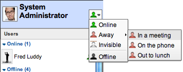
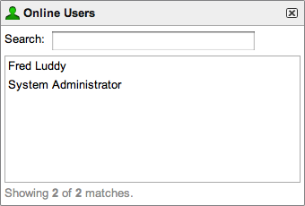
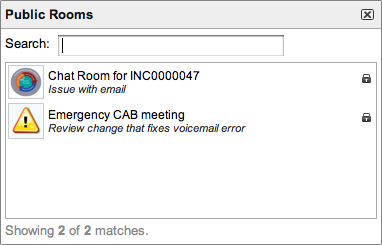
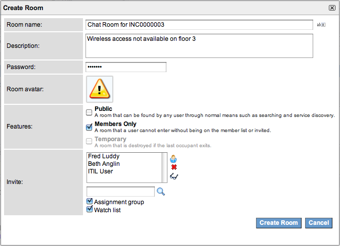
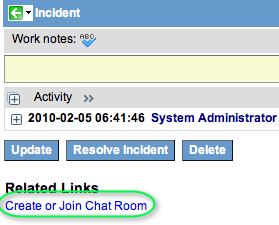
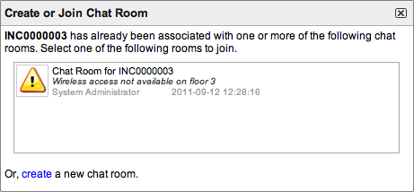

Using Chat
| |
Note: This article applies to Fuji and earlier releases. For more current information, see Legacy: Chat Use at http://docs.servicenow.com
The ServiceNow Wiki is no longer being updated. Visit http://docs.servicenow.com for the latest product documentation. |
Contents
1 Overview
Chat allows you to interact and collaborate through real-time instant messages with other users in a ServiceNow instance (requires the Chat plugin). Use chat to:
- Initiate or participate in chat conversations with one or multiple users.
- Initiate or participate in chat conversations that are attached to task records (such as an incident).
- See when other users are available to chat.
To open the chat desktop, navigate to Social IT > Chat.
Features may vary depending on the version of your instance. If features appear different in your version, you can review a list of recent changes.
| |
Note: Service desk staff may also provide live support to other users via chat. See Using Help Desk Chat, Providing Support. |
{kind=link}
2 Updating Your Profile
Your profile identifies your contributions to conversations. It is created automatically the first time you use chat and consists of:
- Name: from your user account in ServiceNow. Your name appears on your messages and in the member list of any chat room you join.
- Picture: select any picture. Your picture appears beside your name in other users' favorites list and at the top of your favorites list.
To update your profile picture:
- Click your picture in the top of the favorites list.
- Browse to the desired picture file and click Open.
| |
Note: Changes to your profile picture affect both chat and live feed if the Live Feed plugin is activated). |
{kind=link}
3 Updating Your Status
Your status lets other users know whether you are available to chat. Your current status is indicated by the color of the icon in the upper right of your favorites list, beside your name. View the status of other users in your favorites list.
To change your status:
- Click the status icon beside your name.
- Select a status (see table).
- Select a status
{kind=link}
Status Description Appears to Others Online Indicates that you are available to chat. Green icon:
Away Indicates that you are not available because you are away. Red icon:
Away with a message Indicates that you are not available and gives a reason: - In a meeting
- On the phone
- Out to lunch
You cannot create a custom message from the chat desktop.
Red icon and message:
Invisible Indicates that you are not available. You can send and receive messages when your status is Invisible. You appear as Offline to other users. Black icon:
Offline Indicates that you are not available. You cannot send or receive messages when your status is Offline. Users that are not logged in appear as Offline. Black icon:
{kind=link}
{kind=link}
{kind=link}
{kind=link}
4 Using Your Favorites List
Your favorites list appears on your chat desktop and provides the following functions.
To expand or collapse a section in the favorites list, click the section header or click the arrows ( |
{kind=link}
{kind=link}
{kind=link}
{kind=link}
{kind=link}
4.1 Adding a Favorite User
To add a user to your favorite users list:
- Click the Add User button ().
- Begin typing a user name and select a user from the list, or click the reference lookup (
 ) and select a user from the table.
) and select a user from the table. - Click OK.
4.2 Removing a Favorite User
To remove a user from your favorite users list, right-click the user's name and select Remove From List.
4.3 Viewing Online Users
To view a list of all users who are available to chat (status of Online):
- Right-click the Users section header or click Options () on the toolbar.
- Select Show Online Users.
- Start a one-to-one chat with a user on the list by double-clicking a name.
- Send Message or Add To Friend List by right-clicking a name.
- View online users
{kind=link}
4.4 Viewing Rooms
To view a list of all public chat rooms:
- Right-click the Rooms section header or click Options () on the toolbar.
- Select Public Rooms.
- To join a room, double-click a name or right-click and select Join Room. See Joining Chat Rooms.
- View rooms
{kind=link}
5 Starting a Chat
5.1 Starting One-to-One Chats
To start a chat with one user in your favorites list, double-click the user's name or right-click and select Send Message.
To start a chat with one available user, double-click the user's name on the online users list. See Viewing Online Users.
Send a message to start a conversation.
5.2 Creating Chat Rooms
To start a chat with multiple users from the chat desktop (requires access rights):
- Click Create Room () on the favorites list toolbar.
- Enter the room details (see table).
- Click Create Room. An invitation appears in the favorites list of all invited users and a new chat window opens on your chat desktop.
- Create a chat room
{kind=link}
| Field | Value |
|---|---|
| Room name | Enter a name to appear on the chat window header or click the Generate a unique room name button () to use a system-generated name. The default name for a room created from a task is Chat Room for <Task Number>. |
| Description | Enter a room description that appears under the name in the rooms list. The default description for a room created from a task is <Short Description>. |
| Password | Enter a password, if desired. If a password is specified, only users with the password can join the chat room. |
| Room avatar | Upload an image that appears beside the room name in the list of rooms. Click the picture and browse to the desired image file. |
| Features | Select all applicable check boxes:
|
| Invite | Add invited users by using the glide list. For a room created from a task, you can also select all applicable check boxes:
|
{kind=link}
5.3 Creating Chat Rooms for Tasks
To start a chat with multiple users from a task record:
- Open the record (example, an incident on which you are working).
- Incident record
- Click the Create or Join Chat Room related link.
- If a chat room already exists, click a name to join the existing chat room. If no chat room exists, continue to the next step to create a new room.
- Existing rooms for the task
- Click the create link at the bottom of the window.
- Enter the room details as you would for a chat room.
- Click Create Room. An email notification is sent and appears in the favorites list for all invited users (the assignment group and the watch list, if selected, and additional invited users).
- In the New Room Created message, click Join Room.
- A new chat window opens on your chat desktop.
- All invited users are listed in the chat member list. Invited users that are not currently participating in the chat are listed in gray.
{kind=link}
{kind=link}
6 Joining a Chat
6.1 Joining One-to-One Chats
When another user starts a chat by sending a message to you, a chat window opens on your chat desktop. To join the chat, click the window.
6.2 Joining Chat Rooms
If another user invites you to join a chat room, an invitation () appears in your favorites list. To respond, click the invitation. A window opens that displays the room name, room description, and the name of the user who invited you.
- To join the chat, click Join. When the chat window opens on your chat desktop, click the window.
- To ignore the invitation, click Decline.

To rejoin a favorite chat room that you have left, click the chat room name in the Rooms section of the favorites list.
To join a public chat room without an invitation, right-click the Rooms section header and select Public Rooms. Double-click a room name on the list.
6.3 Joining Chat Rooms for Tasks
If another user invites you to join a chat room from a task record, you receive an email notification. To join the chat:
- Click the link in the email notification.
- If a prompt for a password appears, enter the password listed in the email notification.
- When the chat window opens on your chat desktop, click the window.
To join a chat room from a task record without an invitation:
- Open the task record.
- Click the Create or Join Chat Room related link.
- Click a chat room name.
- If a prompt for a password appears, contact the person who created the chat room for the password.
- If a chat room has a password, only users with the password can join the chat.
- When the chat window opens on your chat desktop, click the window.
7 Using a Chat Window
A chat window appears on your chat desktop for each chat conversation that you start or join.
{kind=link}
7.1 Sending Messages
To chat with other users that have joined the conversation, enter your message in the text field at the bottom of the window and press Enter. The message appears in the other users' chat windows.
To send a link, type the full URL (example, http://www.service-now.com). When the message is sent, the text appears blue and any user in the conversation can click it to follow the link.
To send a smiley face, type a colon followed by a close parentheses (:)). When the message is sent, a smiley face () appears in place of the text. For more emoticons, see Sending Emoticons in Messages (Smileys).
{kind=link}
Chat activity is indicated with the following alerts:
- When a new message is posted to an inactive browser tab, the tab name blinks.
- When a new message is posted to an inactive chat window, the window header appears in yellow and blinks.
- When a user joins or leaves a room, a message appears in the other room members' chat windows.
7.2 Sending Emoticons in Messages (Smileys)
To send an emoticon (smiley), type text from the following table. When your message is sent, the emoticon appears in place of the text. For example, enter colon followed by a close parentheses (:)) and a smiley face () appears in your message.
| Text | Image |
|---|---|
| :) :-) | |
| B) B-) BD B-D | |
| :D :-D | |
| :* :-* | |
| :( :-( | |
| <3 | |
| ;) ;-) | |
| :P :-P | |
| :O :-O | |
| X( X-( | |
| :") :"> | |
| :(( :-(( | |
| (A) | |
| :? :-? |
{kind=link}
{kind=link}
{kind=link}
{kind=link}
{kind=link}
{kind=link}
{kind=link}
{kind=link}
{kind=link}
{kind=link}
{kind=link}
7.3 Changing the Display
To view the chat window menu, click the gear button () in the bottom left.
- To show or hide timestamps, select Show Timestamps from the chat window menu or press F2.
- To show or hide the chat member list, select Show Members from the chat window menu or press F4.
To resize the window, point to the lower corner (left or right). When the pointer changes shape, drag the window to the desired size.
To move the window, point to the header. When the pointer changes shape, drag the window anywhere on your chat desktop.
To close a chat window, click the X in the upper right corner.
7.4 Inviting Users into Chats
To invite another user into a chat:
- Select Invite User from the chat window menu ().
- Begin typing a user name and select a user from the list, or click the reference lookup () and select a user from the table.
- Click OK.
- An invitation is sent to the selected user. One-to-one chats are automatically converted into temporary chat rooms.
7.5 Adding Favorite Rooms
To add a room to your favorites, click the chat window and select Add To Favorites from the chat window menu ().
7.6 Removing a Favorite Room
To remove a room from your favorites, right-click the room name and select Remove From List.
8 Setting Your Chat Preferences
Use the Chat Window Preferences to set audio notifications and default chat window display options. The default display options control how a chat window looks when you first open it. You can still control the display options for an individual window as described in Changing the Display.
To view your chat preferences, click your name in the upper left corner of the chat desktop and select Chat Preferences.
To set your preferences, select or clear the check boxes next to the options, then click Update.
|
{kind=link}
9 Deleting a Chat Room
Users with the chat_admin role can delete chat rooms. Note that when you delete a chat room, the system also deletes the records for any chat members and messages.
In the application navigator filter, enter chat_room.list. Delete multiple chat rooms from the list or open a chat room record and click Delete.